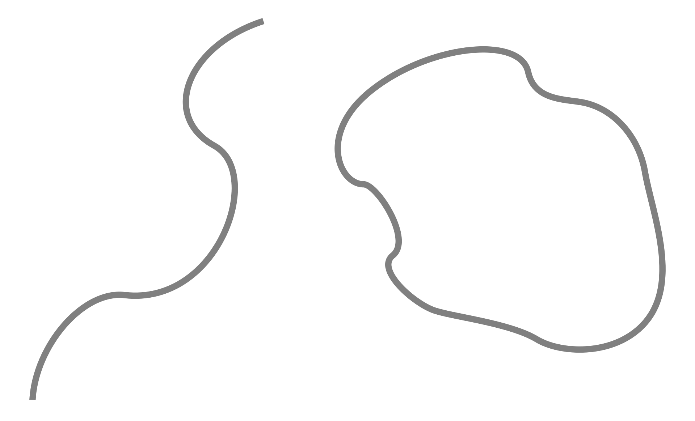

A Brief History Time
- Author: Stephen Hawking
- Language: English
- Subject: Cosmology
- Publisher: Bantam Dell Publishing Group
- Publication date: April 1, 1988
- Publication place: United Kingdom
- Media type: Print (Hardcover and Paperback)
- Pages: 256
Ptolemy's Earth-centric model about the location of the planets, stars, and Sun

A representation of a light wave
Light interference causes many colours to appear.

A proton consists of three quarks, which are different colours due to colour confinement.

The expansion of the universe since the Big Bang

A black hole, showing how it distorts its background image through gravitational lensing

The Big Bang and the evolution of the Universe
The fundamental objects of string theory are open and closed strings.
For the documentary film on Stephen Hawking, see A Brief History of Time (film). For the biographical film on Stephen Hawking, see The Theory of Everything (2014 film).
A Brief History of Time: From the Big Bang to Black Holes is a book on theoretical cosmology by the physicist Stephen Hawking. It was first published in 1988. Hawking wrote the book for readers who had no prior knowledge of physics.
In A Brief History of Time, Hawking writes in non-technical terms about the structure, origin, development and eventual fate of the Universe, which is the object of study of astronomy and modern physics. He talks about basic concepts like space and time, basic building blocks that make up the Universe (such as quarks) and the fundamental forces that govern it (such as gravity). He writes about cosmological phenomena such as the Big Bang and black holes. He discusses two major theories, general relativity and quantum mechanics, that modern scientists use to describe the Universe. Finally, he talks about the search for a unifying theory that describes everything in the Universe in a coherent manner.
The book became a bestseller and has sold more than 25 million copies in 40 languages.[1]
Publication
Early in 1983, Hawking first approached Simon Mitton, the editor in charge of astronomy books at Cambridge University Press, with his ideas for a popular book on cosmology. Mitton was doubtful about all the equations in the draft manuscript, which he felt would put off the buyers in airport bookshops that Hawking wished to reach. With some difficulty, he persuaded Hawking to drop all but one equation.[2] The author himself notes in the book's acknowledgements that he was warned that for every equation in the book, the readership would be halved, hence it includes only a single equation: E = mc2
Contents
In A Brief History of Time, Stephen Hawking explains a range of subjects in cosmology, including the Big Bang, black holes and light cones, to the non-specialist reader. His main goal is to give an overview of the subject, but he also attempts to explain some complex mathematics. In the 1996 edition of the book and subsequent editions, Hawking discusses the possibility of time travel and wormholes and explores the possibility of having a Universe without a quantum singularity at the beginning of time. The 2017 edition of the book contained twelve chapters, whose contents are summarized below.
Chapter 1: Our Picture of the Universe
In the first chapter, Hawking discusses the history of astronomical studies, particularly ancient Greek philosopher Aristotle's conclusions about spherical Earth and a circular geocentric model of the Universe, later elaborated upon by the second-century Greek astronomer Ptolemy. Hawking then depicts the rejection of the Aristotelian and Ptolemaic model and the gradual development of the currently accepted heliocentric model of the Solar System, first proposed by the Polish astronomer Nicholas Copernicus in 1514, validated a century later by Italian scientist Galileo Galilei and German scientist Johannes Kepler, and further supported mathematically by English scientist Isaac Newton in his 1687 book on gravity, Principia Mathematica.
In this chapter, Hawking also covers how the topic of the origin of the Universe and time was studied and debated over the centuries: the perennial existence of the Universe hypothesised by Aristotle and other early philosophers was opposed by St. Augustine and other theologians' belief in its creation at a specific time in the past, where time is a concept that was born with the creation of the Universe. In the modern age, German philosopher Immanuel Kant argued again that time had no beginning. In 1929, American astronomer Edwin Hubble's discovery of the expanding Universe implied that between ten and twenty billion years ago, the entire Universe was contained in one singular extremely dense place. This discovery brought the concept of the beginning of the Universe within the province of science. Currently scientists use Albert Einstein's general theory of relativity and quantum mechanics to partially describe the workings of the Universe, while still looking for a complete Grand Unified Theory that would describe everything in the Universe.
Chapter 2: Space and Time
In this chapter, Hawking describes the development of scientific thought regarding the nature of space and time. He first describes the Aristotelian idea that the naturally preferred state of a body is to be at rest, and which can only be moved by force, implying that heavier objects will fall faster. However, Italian scientist Galileo Galilei experimentally proved Aristotle's theory wrong by observing the motion of objects of different weights and concluding that all objects would fall at the same rate. This eventually led to English scientist Isaac Newton's laws of motion and gravity. However, Newton's laws implied that there is no such thing as absolute state of rest or absolute space as believed by Aristotle: whether an object is 'at rest' or 'in motion' depends on the inertial frame of reference of the observer.
Hawking then describes Aristotle and Newton's belief in absolute time, i.e. time can be measured accurately regardless of the state of motion of the observer. However, Hawking writes that this commonsense notion does not work at or near the speed of light. He mentions Danish scientist Ole Rømer's discovery that light travels at a very high but finite speed through his observations of Jupiter and one of its moons Io as well as British scientist James Clerk Maxwell's equations on electromagnetism which showed that light travels in waves moving at a fixed speed. Since the notion of absolute rest was abandoned in Newtonian mechanics, Maxwell and many other physicists argued that light must travel through a hypothetical fluid called aether, its speed being relative to that of aether. This was later disproved by the Michelson–Morley experiment, showing that the speed of light always remains constant regardless of the motion of the observer. Einstein and Henri Poincaré later argued that there is no need for aether to explain the motion of light, assuming that there is no absolute time. The special theory of relativity is based on this, arguing that light travels with a finite speed no matter what the speed of the observer is.
Mass and energy are related by the equation E = mc2, which explains that an infinite amount of energy is needed for any object with mass to travel at the speed of light (c = 3×10⁸m/s). A new way of defining a metre using speed of light was developed. "Events" can also be described by using light cones, a spacetime graphical representation that restricts what events are allowed and what are not based on the past and the future light cones. A 4-dimensional spacetime is also described, in which 'space' and 'time' are intrinsically linked. The motion of an object through space inevitably impacts the way in which it experiences time.
Einstein's general theory of relativity explains how the path of a ray of light is affected by 'gravity', which according to Einstein is an illusion caused by the warping of spacetime, in contrast to Newton's view which described gravity as a force which matter exerts on other matter. In spacetime curvature, light always travels in a straight path in the 4-dimensional "spacetime", but may appear to curve in 3-dimensional space due to gravitational effects. These straight-line paths are geodesics. The twin paradox, a thought experiment in special relativity involving identical twins, considers that twins can age differently if they move at different speeds relative to each other, or even if they lived in different locations with unequal spacetime curvature. Special relativity is based upon arenas of space and time where events take place, whereas general relativity is dynamic where force could change spacetime curvature and which gives rise to a dynamic, expanding Universe. Hawking and Roger Penrose worked upon this and later proved using general relativity that if the Universe had a beginning a finite time ago in the past, then it also might end at a finite time from now into the future.
Chapter 3: The Expanding Universe
In this chapter, Hawking first describes how physicists and astronomers calculated the relative distance of stars from the Earth. In the 18th century, Sir William Herschel confirmed the positions and distances of many stars in the night sky. In 1924, Edwin Hubble discovered a method to measure the distance using the brightness of Cepheid variable stars as viewed from Earth. The luminosity, brightness, and distance of these stars are related by a simple mathematical formula. Using all these, he calculated distances of nine different galaxies. We live in a fairly typical spiral galaxy, containing vast numbers of stars.
The stars are very far away from us, so we can only observe their one characteristic feature, their light. When this light is passed through a prism, it gives rise to a spectrum. Every star has its own spectrum, and since each element has its own unique spectra, we can measure a star's light spectra to know its chemical composition. We use thermal spectra of the stars to know their temperature. In 1920, when scientists were examining spectra of different galaxies, they found that some of the characteristic lines of the star spectrum were shifted towards the red end of the spectrum. The implications of this phenomenon were given by the Doppler effect, and it was clear that many galaxies were moving away from us.
It was assumed that, since some galaxies are red shifted, some galaxies would also be blue shifted. However, redshifted galaxies far outnumbered blue shifted galaxies. Hubble found that the amount of redshift is directly proportional to relative distance. From this, he determined that the Universe is expanding and had a beginning. Despite this, the concept of a static Universe persisted into the 20th century. Einstein was so sure of a static Universe that he developed the 'cosmological constant' and introduced 'anti-gravity' forces to allow a universe of infinite age to exist. Moreover, many astronomers also tried to avoid the implications of general relativity and stuck with their static Universe, with one especially notable exception, the Russian physicist Alexander Friedmann.
Friedmann made two very simple assumptions: the Universe is identical wherever we are, i.e. homogeneity, and that it is identical in every direction that we look in, i.e. isotropy. His results showed that the Universe is non-static. His assumptions were later proved when two physicists at Bell Labs, Arno Penzias and Robert Wilson, found unexpected microwave radiation not only from the one particular part of the sky but from everywhere and by nearly the same amount. Thus Friedmann's first assumption was proved to be true.
At around the same time, Robert H. Dicke and Jim Peebles were also working on microwave radiation. They argued that they should be able to see the glow of the early Universe as background microwave radiation. Wilson and Penzias had already done this, so they were awarded with the Nobel Prize in 1978. In addition, our place in the Universe is not exceptional, so we should see the Universe as approximately the same from any other part of space, which supports Friedmann's second assumption. His work remained largely unknown until similar models were made by Howard Robertson and Arthur Walker.
Friedmann's model gave rise to three different types of models for the evolution of the Universe. First, the Universe would expand for a given amount of time, and if the expansion rate is less than the density of the Universe (leading to gravitational attraction), it would ultimately lead to the collapse of the Universe at a later stage. Secondly, the Universe would expand, and at some time, if the expansion rate and the density of the Universe became equal, it would expand slowly and stop, leading to a somewhat static Universe. Thirdly, the Universe would continue to expand forever, if the density of the Universe is less than the critical amount required to balance the expansion rate of the Universe.
The first model depicts the space of the Universe to be curved inwards. In the second model, the space would lead to a flat structure, and the third model results in negative 'saddle shaped' curvature. Even if we calculate, the current expansion rate is more than the critical density of the Universe including the dark matter and all the stellar masses. The first model included the beginning of the Universe as a Big Bang from a space of infinite density and zero volume known as 'singularity', a point where the general theory of relativity (Friedmann's solutions are based in it) also breaks down.
This concept of the beginning of time (proposed by the Belgian Catholic priest Georges Lemaître) seemed originally to be motivated by religious beliefs, because of its support of the biblical claim of the universe having a beginning in time instead of being eternal.[3] So a new theory was introduced, the "steady state theory" by Hermann Bondi, Thomas Gold, and Fred Hoyle, to compete with the Big Bang theory. Its predictions also matched with the current Universe structure. But the fact that radio wave sources near us are far fewer than from the distant Universe, and there were numerous more radio sources than at present, resulted in the failure of this theory and universal acceptance of the Big Bang Theory. Evgeny Lifshitz and Isaak Markovich Khalatnikov also tried to find an alternative to the Big Bang theory but also failed.
Roger Penrose used light cones and general relativity to prove that a collapsing star could result in a region of zero size and infinite density and curvature called a black hole. Hawking and Penrose proved together that the Universe should have arisen from a singularity, which Hawking himself disproved once quantum effects are taken into account.
Chapter 4: The Uncertainty Principle
In this chapter, Hawking first discusses nineteenth-century French mathematician Laplace's strong belief in scientific determinism, where scientific laws will eventually be able to accurately predict the future of the Universe. Then he discusses the theory of infinite radiation of stars according to the calculations of British scientists Lord Rayleigh and James Jeans, which was later revised in 1900 by German scientist Max Planck who suggested that energy must radiate in small, finite packets called quanta.
Hawking then discusses the uncertainty principle formulated by German scientist Werner Heisenberg, according to which the speed and the position of a particle cannot be precisely known due to Planck's quantum hypothesis: increasing the accuracy in measuring its speed will decrease the certainty of its position and vice versa. This disproved Laplace's idea of a completely deterministic theory of the universe. Hawking then describes the eventual development of quantum mechanics by Heisenberg, Austrian physicist Erwin Schroedinger and English physicist Paul Dirac in the 1920s, a theory which introduced an irreducible element of unpredictability into science, and despite German scientist Albert Einstein's strong objections, it has been proven to be very successful in describing the universe except for gravity and large-scale structures.
Hawking then discusses how Heisenberg's uncertainty principle implies the wave–particle duality behaviour of light (and particles in general).
He then describes the phenomenon of interference where multiple light waves interfere with each other to give rise to a single light wave with properties different from those of the component waves, as well as the interference within particles, exemplified by the two-slit experiment. Hawking writes how interference refined our understanding of the structure of atoms, the building blocks of matter. While Danish scientist Niels Bohr's theory only partially solved the problem of collapsing electrons, quantum mechanics completely resolved it. According to Hawking, American scientist Richard Feynman's sum over histories is a nice way of visualizing the wave-particle duality. Finally, Hawking mentions that Einstein's general theory of relativity is a classical, non-quantum theory which ignores the uncertainty principle and that it has to be reconciled with quantum theory in situations where gravity is very strong, such as black holes and the Big Bang.
Chapter 5: Elementary Particles and Forces of Nature
In this chapter, Hawking traces the history of investigation about the nature of matter: Aristotle's four elements, Democritus's notion of indivisible atoms, John Dalton's ideas about atoms combining to form molecules, J. J. Thomson's discovery of electrons inside atoms, Ernest Rutherford's discovery of atomic nucleus and protons, James Chadwick's discovery of neutrons and finally Murray Gell-Mann's work on even smaller quarks which make up protons and neutrons. Hawking then discusses the six different "flavors" (up, down, strange, charm, bottom, and top) and three different "colors" of quarks (red, green, and blue). Later in the chapter he discusses anti-quarks, which are outnumbered by quarks due to the expansion and cooling of the Universe.
Hawking then discusses the spin property of particles, which determines what a particle looks like from different directions. Hawking then discusses two groups of particles in the Universe based on their spin: fermions and bosons. Fermions, with a spin of 1/2, follow the Pauli exclusion principle, which states that they cannot share the same quantum state (for example, two "spin up" protons cannot occupy the same location in space). Without this rule, complex structures could not exist.
Bosons or the force-carrying particles, with a spin of 0, 1, or 2, do not follow the exclusion principle. Hawking then gives the examples of virtual gravitons and virtual photons. Virtual gravitons, with a spin of 2, carry the force of gravity. Virtual photons, with a spin of 1, carry the electromagnetic force. Hawking then discusses the weak nuclear force (responsible for radioactivity and affecting mainly fermions) and the strong nuclear force carried by the particle gluon, which binds quarks together into hadrons, usually neutrons and protons, and also binds neutrons and protons together into atomic nuclei. Hawking then writes about the phenomenon called color confinement which prevents the discovery of quarks and gluons on their own (except at extremely high temperature) as they remain confined within hadrons.
Hawking writes that at extremely high temperature, the electromagnetic force and weak nuclear force behave as a single electroweak force, giving rise to the speculation that at even higher temperatures, the electroweak force and strong nuclear force would also behave as a single force. Theories which attempt to describe the behaviour of this "combined" force are called Grand Unified Theories, which may help us explain many of the mysteries of physics that scientists have yet to solve.
Chapter 6: Black Holes
In this chapter, Hawking discusses black holes, regions of spacetime where extremely strong gravity prevents everything, including light, from escaping from within them. Hawking describes how most black holes are formed during the collapse of massive stars (at least 25 times heavier than the Sun) approaching end of life. He writes about the event horizon, the black hole's boundary from which no particle can escape to the rest of spacetime. Hawking then discusses non-rotating black holes with spherical symmetry and rotating ones with axisymmetry. Hawking then describes how astronomers discover a black hole not directly, but indirectly, by observing with special telescopes the powerful X-rays emitted when it consumes a star. Hawking ends the chapter by mentioning his famous bet made in 1974 with American physicist Kip Thorne in which Hawking argued that black holes did not exist. Hawking lost the bet as new evidence proved that Cygnus X-1 was indeed a black hole.
Chapter 7: Black Holes Ain't So Black
This chapter discusses an aspect of black holes' behavior that Stephen Hawking discovered in the 1970s. According to earlier theories, black holes can only become larger, and never smaller, because nothing which enters a black hole can come out. However, in 1974, Hawking published a new theory which argued that black holes can "leak" radiation. He imagined what might happen if a pair of virtual particles appeared near the edge of a black hole. Virtual particles briefly 'borrow' energy from spacetime itself, then annihilate with each other, returning the borrowed energy and ceasing to exist. However, at the edge of a black hole, one virtual particle might be trapped by the black hole while the other escapes. Because of the second law of thermodynamics, particles are 'forbidden' from taking energy from the vacuum. Thus, the particle takes energy from the black hole instead of from the vacuum, and escape from the black hole as Hawking radiation.
According to Hawking, black holes must very slowly shrink over time and eventually "evaporate" because of this radiation, rather than continue existing forever as scientists had previously believed.
Chapter 8: The Origin and Fate of the Universe
The beginning and the end of the universe are discussed in this chapter.
Most scientists agree that the Universe began in an expansion called the "Big Bang". At the start of the Big Bang, the Universe had an extremely high temperature, which prevented the formation of complex structures like stars, or even very simple ones like atoms. During the Big Bang, a phenomenon called "inflation" took place, in which the Universe briefly expanded ("inflated") to a much larger size. Inflation explains some characteristics of the Universe that had previously greatly confused researchers. After inflation, the universe continued to expand at a slower pace. It became much colder, eventually allowing for the formation of such structures.
Hawking also discusses how the Universe might have appeared differently if it grew in size slower or faster than it actually has. For example, if the Universe expanded too slowly, it would collapse, and there would not be enough time for life to form. If the Universe expanded too quickly, it would have become almost empty.
Hawking ultimately proposes the conclusion that the universe might be finite, but boundless. In other words, it may have no beginning nor ending in time, but merely exist with a finite amount of matter and energy.
The concept of quantum gravity is also discussed in this chapter.
Chapter 9: The Arrow of Time
In this chapter Hawking talks about why "real time", as Hawking calls time as humans observe and experience it (in contrast to "imaginary time", which Hawking claims is inherent to the laws of science) seems to have a certain direction, notably from the past towards the future. Hawking then discusses three "arrows of time" which, in his view, give time this property. Hawking's first arrow of time is the thermodynamic arrow of time: the direction in which entropy (which Hawking calls disorder) increases. According to Hawking, this is why we never see the broken pieces of a cup gather themselves together to form a whole cup. Hawking's second arrow is the psychological arrow of time, whereby our subjective sense of time seems to flow in one direction, which is why we remember the past and not the future. Hawking claims that our brain measures time in a way where disorder increases in the direction of time – we never observe it working in the opposite direction. In other words, he claims that the psychological arrow of time is intertwined with the thermodynamic arrow of time. Hawking's third and final arrow of time is the cosmological arrow of time: the direction of time in which the Universe is expanding rather than contracting. According to Hawking, during a contraction phase of the universe, the thermodynamic and cosmological arrows of time would not agree.
Hawking then claims that the "no boundary proposal" for the universe implies that the universe will expand for some time before contracting back again. He goes on to argue that the no boundary proposal is what drives entropy and that it predicts the existence of a well-defined thermodynamic arrow of time if and only if the universe is expanding, as it implies that the universe must have started in a smooth and ordered state that must grow toward disorder as time advances. He argues that, because of the no boundary proposal, a contracting universe would not have a well-defined thermodynamic arrow and therefore only a Universe which is in an expansion phase can support intelligent life. Using the weak anthropic principle, Hawking goes on to argue that the thermodynamic arrow must agree with the cosmological arrow in order for either to be observed by intelligent life. This, in Hawking's view, is why humans experience these three arrows of time going in the same direction.
Chapter 10: Wormholes and Time Travel
In this chapter, Hawking discusses whether it is possible to time travel, i.e., travel into the future or the past. He shows how physicists have attempted to devise possible methods by humans with advanced technology may be able to travel faster than the speed of light, or travel backwards in time, and these concepts have become mainstays of science fiction. Einstein–Rosen bridges were proposed early in the history of general relativity research. These "wormholes" would appear identical to black holes from the outside, but matter which entered would be relocated to a different location in spacetime, potentially in a distant region of space, or even backwards in time. However, later research demonstrated that such a wormhole, even if possible for it to form in the first place, would not allow any material to pass through before turning back into a regular black hole. The only way that a wormhole could theoretically remain open, and thus allow faster-than-light travel or time travel, would require the existence of exotic matter with negative energy density, which violates the energy conditions of general relativity. As such, almost all physicists agree that faster-than-light travel and travel backwards in time are not possible.
Hawking also describes his own "chronology protection conjecture", which provides a more formal explanation for why faster-than-light and backwards time travel are almost certainly impossible.
Chapter 11: The Unification of Physics
Quantum field theory (QFT) and general relativity (GR) describe the physics of the Universe with astounding accuracy within their own domains of applicability. However, these two theories contradict each other. For example, the uncertainty principle of QFT is incompatible with GR. This contradiction, and the fact that QFT and GR do not fully explain observed phenomena, have led physicists to search for a theory of "quantum gravity" that is both internally consistent and explains observed phenomena just as well as or better than existing theories do.
Hawking is cautiously optimistic that such a unified theory of the Universe may be found soon, in spite of significant challenges. At the time the book was written, "superstring theory" had emerged as the most popular theory of quantum gravity, but this theory and related string theories were still incomplete and had yet to be proven in spite of significant effort (this remains the case as of 2021). String theory proposes that particles behave like one-dimensional "strings", rather than as dimensionless particles as they do in QFT. These strings "vibrate" in many dimensions. Instead of 3 dimensions as in QFT or 4 dimensions as in GR, superstring theory requires a total of 10 dimensions. The nature of the six "hyperspace" dimensions required by superstring theory are difficult if not impossible to study, leaving countless theoretical string theory landscapes which each describe a universe with different properties. Without a means to narrow the scope of possibilities, it is likely impossible to find practical applications for string theory.
Alternative theories of quantum gravity, such as loop quantum gravity, similarly suffer from a lack of evidence and difficulty to study.
Hawking thus proposes three possibilities: 1. there exists a complete unified theory that we will eventually find; 2. the overlapping characteristics of different landscapes will allow us to gradually explain physics more accurately with time and 3. there is no ultimate theory. The third possibility has been sidestepped by acknowledging the limits set by the uncertainty principle. The second possibility describes what has been happening in physical sciences so far, with increasingly accurate partial theories.
Hawking believes that such refinement has a limit and that by studying the very early stages of the Universe in a laboratory setting, a complete theory of Quantum Gravity will be found in the 21st century allowing physicists to solve many of the currently unsolved problems in physics.
Conclusion
In this final chapter, Hawking summarises the efforts made by humans through their history to understand the Universe and their place in it: starting from the belief in anthropomorphic spirits controlling nature, followed by the recognition of regular patterns in nature, and finally with the scientific advancement in recent centuries, the inner workings of the universe have become far better understood. He recalls the suggestion of the nineteenth-century French mathematician Laplace that the Universe's structure and evolution could eventually be precisely explained by a set of laws whose origin is left in God's domain. However, Hawking states that the uncertainty principle introduced by the quantum theory in the twentieth century has set limits to the predictive accuracy of future laws to be discovered.
Hawking comments that historically, the study of cosmology (the study of the origin, evolution, and end of Earth and the Universe as a whole) has been primarily motivated by a search for philosophical and religious insights, for instance, to better understand the nature of God, or even whether God exists at all. However, for Hawking, most scientists today who work on these theories approach them with mathematical calculation and empirical observation, rather than asking such philosophical questions. In his mind, the increasingly technical nature of these theories have caused modern cosmology to become increasingly divorced from philosophical discussion. Hawking nonetheless expresses hope that one day everybody would talk about these theories in order to understand the true origin and nature of the Universe, and accomplish "the ultimate triumph of human reasoning".